Banc réel
Aéropendule : quatre lois de commande
Identification expérimentale d'un pendule actionné par hélice (R² = 0,943 en validation), puis PID, H∞, MRAC et mode glissant testés sur la maquette réelle.
Voir le code →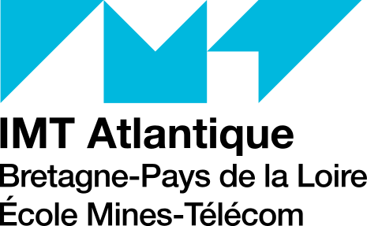
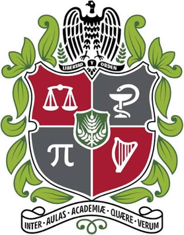
Élève ingénieur en Automatique & Systèmes Cyber-physiques
Contrôle · Robotique · Systèmes embarqués · Automatisation
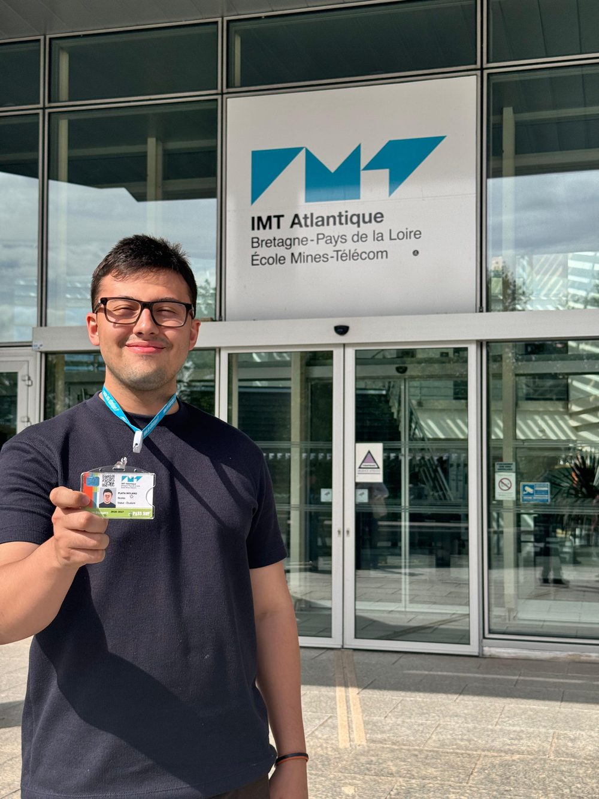
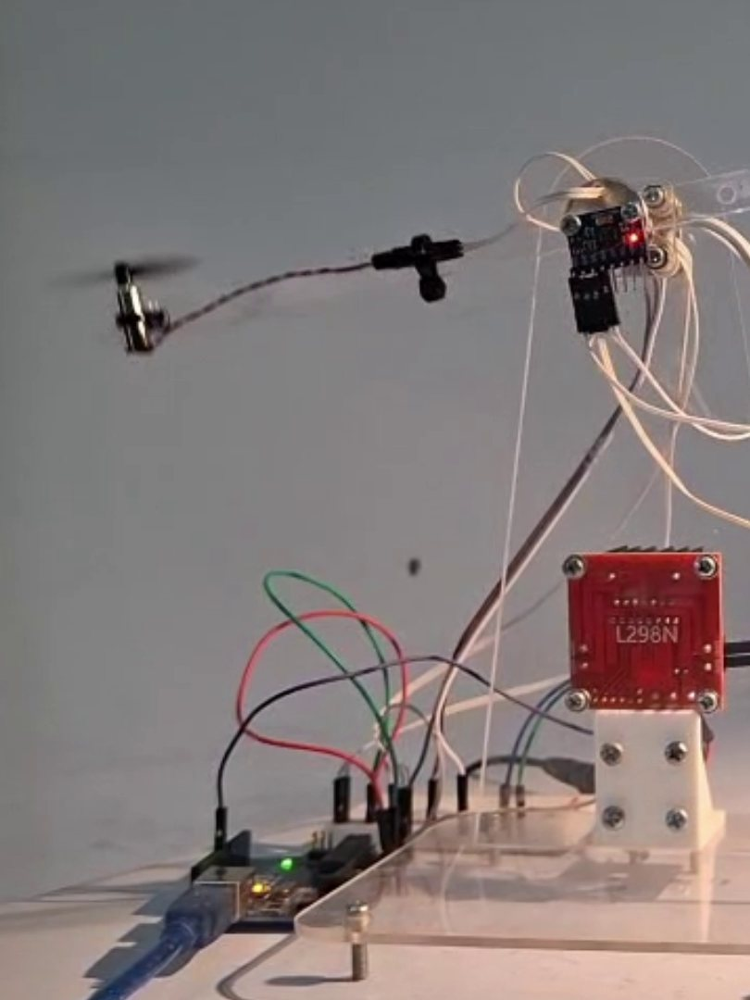
Élève ingénieur en double diplôme entre l'Universidad Nacional de Colombia, où j'ai suivi le cursus d'ingénierie mécatronique, et l'IMT Atlantique, où je me spécialise dans la thématique Automatique et Systèmes Cyber-physiques sur le campus de Nantes. Je m'intéresse au contrôle-commande, à la robotique, aux systèmes embarqués et à l'automatisation industrielle.
J'aime les projets où l'on passe du modèle au montage réel : identifier une plante, concevoir la loi de commande, la programmer sur un microcontrôleur ou un automate, puis vérifier sur le banc que le système se comporte comme prévu. En parallèle, je fais de la recherche sur des capteurs piézoélectriques au sein du groupe KYMA.
Comprendre pourquoi un système réagit comme il le fait, construire la solution qui le fait marcher pour de vrai, puis l'expliquer simplement. C'est pour cela que je réalise des vidéos pédagogiques animées sur le contrôle et l'électronique, et que j'ai lancé le blog de vulgarisation « El Éter ».
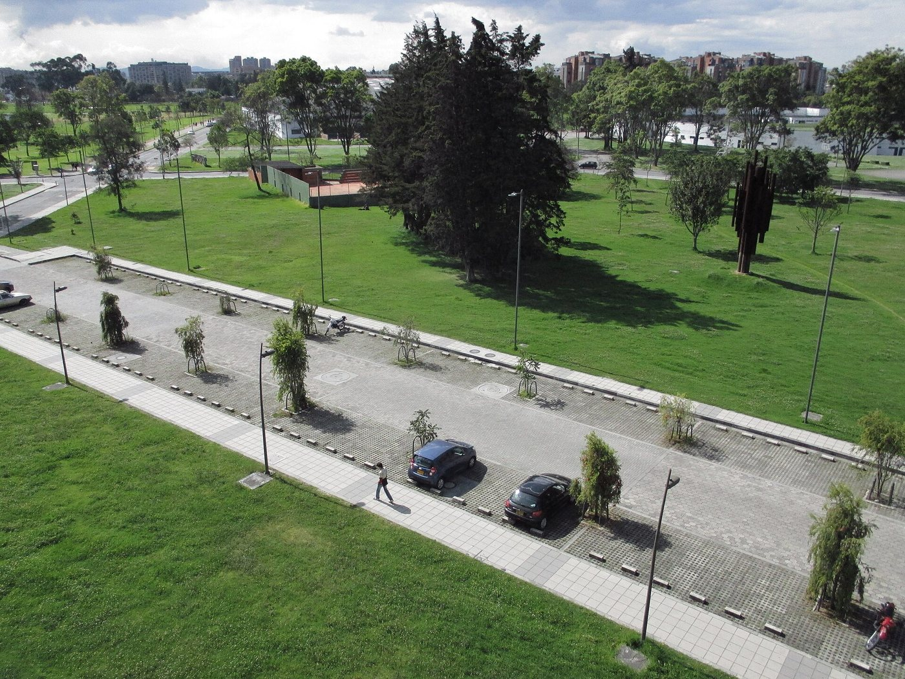
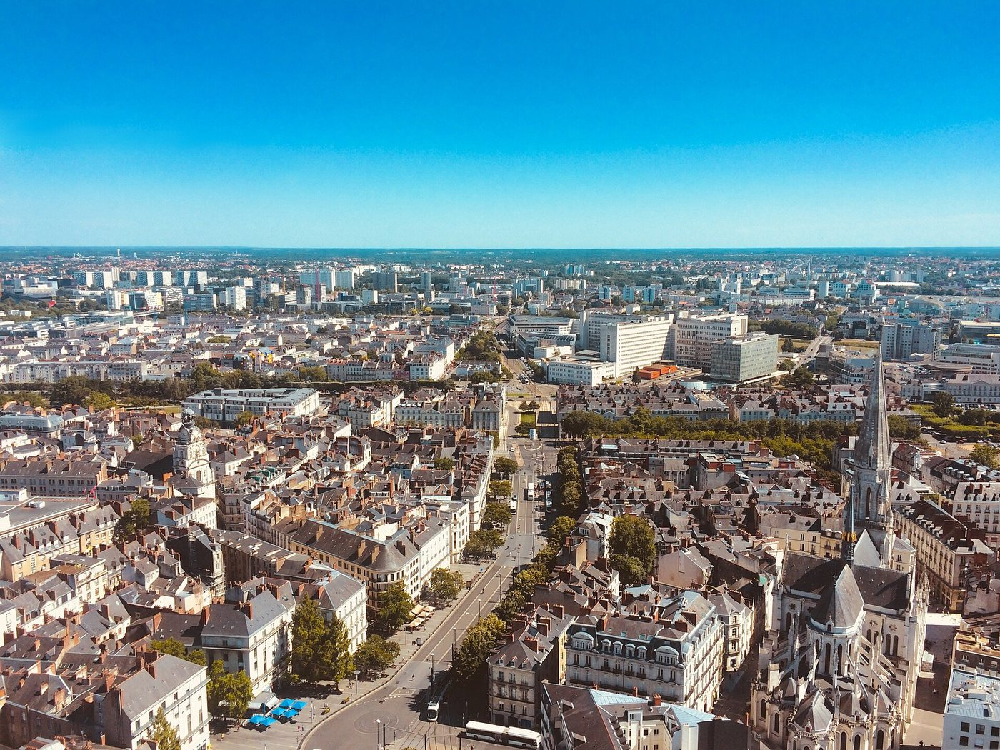
Identification expérimentale d'un pendule actionné par hélice (R² = 0,943 en validation), puis PID, H∞, MRAC et mode glissant testés sur la maquette réelle.
Voir le code →Synthèse par sensibilité mixte (S, T, KS), déployée sur Arduino depuis Simulink, avec une étude de robustesse face au retard de l'actionneur, à l'échantillonnage et aux erreurs de paramètres.
Un aimant qui flotte sans microcontrôleur : rétro-ingénierie complète du circuit analogique (capteurs Hall, correcteur PD, étage push-pull), expliquée en une série de 9 vidéos animées.
Voir le code →Bras plan à deux degrés de liberté qui dessine un trèfle : trajectoire polaire paramétrique, cinématique inverse, PID sur ESP32 et carte électronique conçue par l'équipe.
Voir le code →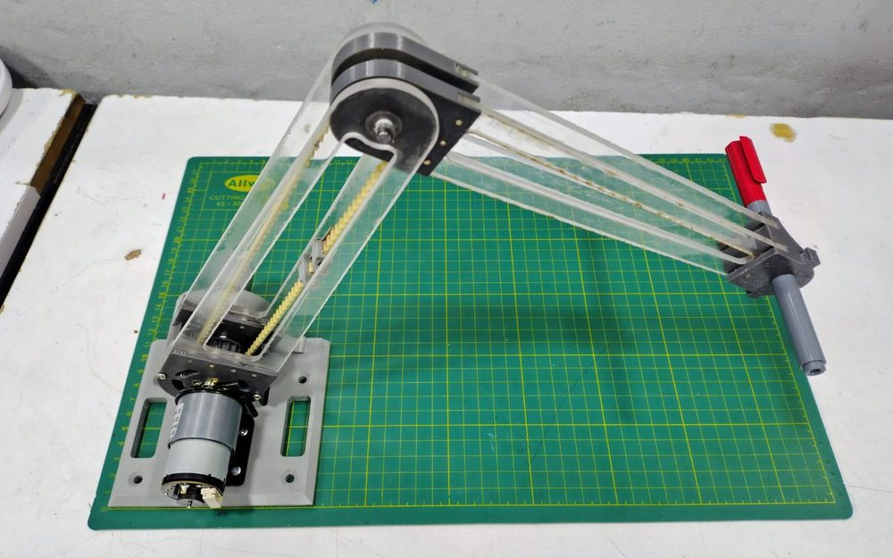
Profils de mouvement quintiques pour raccorder l'approche et le cycle sans à-coups, et visualisation en temps réel sous MATLAB à 60 Hz par liaison série.
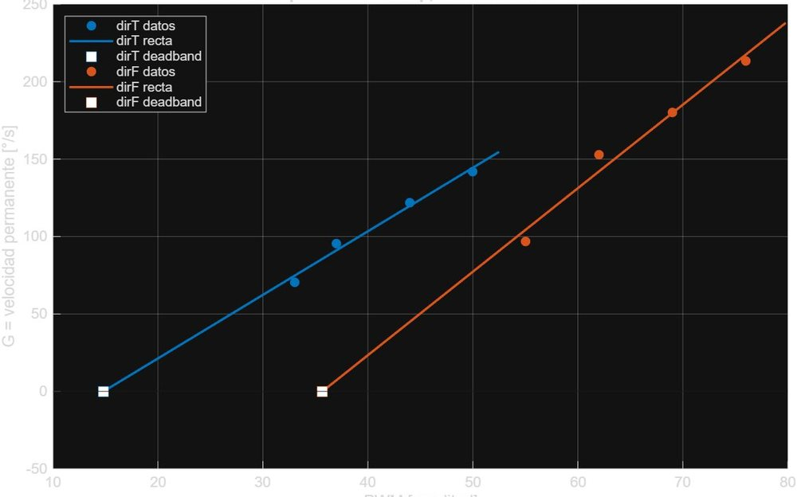
Chaque articulation identifiée par essais en impulsion (R² > 0,99) : gain, constante de temps et zone morte, puis réglage des correcteurs sur le robot.
Superviseur non invasif pour climatiseur sur ESP32-C3 : présence, température, clonage des trames infrarouges, machine à états, panneau web et MQTT avec intégration Home Assistant. Économie estimée : environ 29 %.
PCB deux couches conçu sous KiCad et boîtier modélisé sous Fusion 360, du schéma au prototype assemblé.
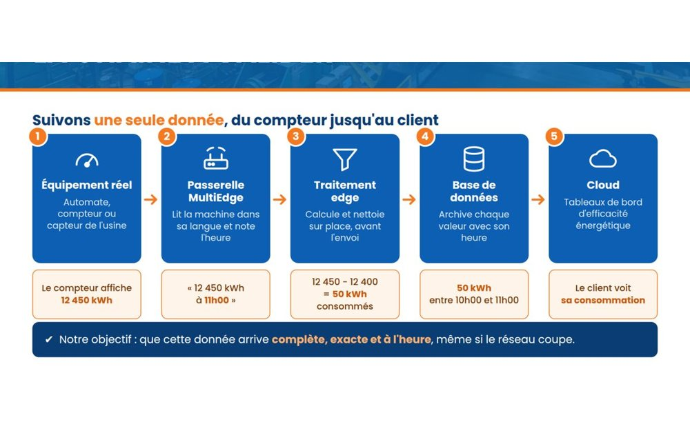
Commande d'entreprise en cours avec une startup incubée à l'IMT Atlantique : déployer et qualifier une passerelle multiprotocole (MQTT, Modbus, OPC-UA, S7, EtherNet/IP) jusqu'au cloud.
Commande d'une machine à trois axes (20 caisses par minute) programmée en ladder sur un automate Allen-Bradley émulé, validée sans machine réelle.
Voir le code →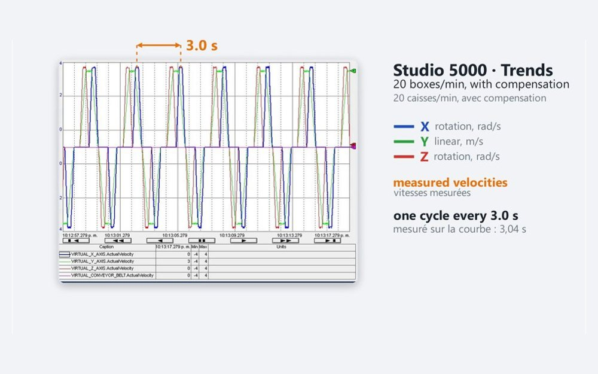
Vitesses relevées dans les Trends de Studio 5000 : un cycle toutes les 3 s, et une compensation de la latence de communication qui faisait perdre un cycle à 20 caisses par minute.
L'automate émulé pilote par OPC DA un modèle 3D sous Siemens NX : la machine virtuelle réagit aux sorties du programme en temps réel.
KYMA est le groupe de recherche en capteurs, contrôle et intelligence artificielle du département de mécatronique de l'UNAL. J'y travaille sur le projet Piezo : synthèse et caractérisation du titanate de baryum (BaTiO₃) pour fabriquer des capteurs de force et de vibration sans plomb.
Dans la maille pérovskite, l'ion titane légèrement décentré crée un dipôle : c'est ce qui rend le matériau piézoélectrique, et c'est ce que le capteur mesure.
Voir le groupe KYMA →Ce simulateur utilise le modèle que j'ai identifié sur le banc, linéarisé autour de 70°. Déplacez les curseurs : la réponse à un échelon de 10° se recalcule en direct.
Modèle : G(s) = 140,3 / (s² + 1,937 s + 31,32), entrée en % de PWM, sortie en degrés. Correcteur Kp + Ki/s + Kd·Ns/(s+N) avec N = 100.
PID, H∞, MRAC et mode glissant sur la même maquette, avec les courbes mesurées à côté.
Le lévitateur en fonctionnement, puis le circuit expliqué : champs, capteur Hall, correcteur et étage de puissance.
Trois axes, un automate émulé et un jumeau numérique : comment la machine a été programmée et validée.
De la platine d'essai à la carte soudée, puis l'essai dans une vraie pièce.
Début de l'ingénierie mécatronique à Bogotá.
Prototypage, impression 3D et automatisation de flux (n8n).
Recherche sur les capteurs piézoélectriques (BaTiO₃).
Sélectionné pour l'IMT Atlantique, 5ᵉ de ma promotion.
Aéropendule, ADANISS, ThermaLink, Case Erector ; rentrée à Nantes en août.
À partir d'avril, dans votre équipe ?
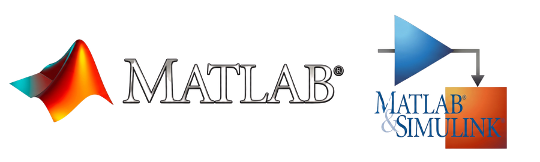

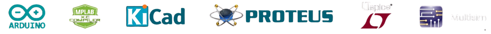
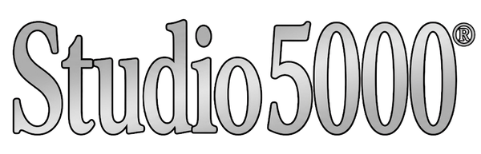
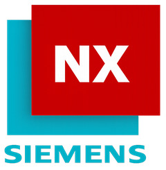
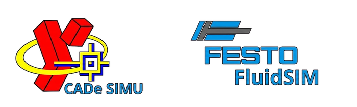
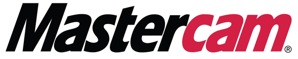
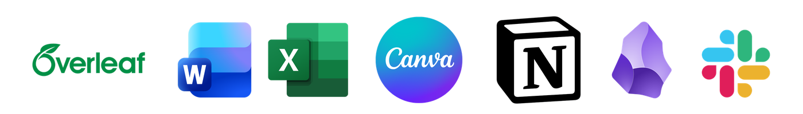
Élève ingénieur généraliste (FISE, 2ᵉ année), double diplôme.
Thématique ASCY : Automatique et Systèmes Cyber-physiques · 2026–2028
Ingénierie mécatronique, 2021–2026. Moyenne 4,4/5 · 5ᵉ de la promotion · moniteur académique.
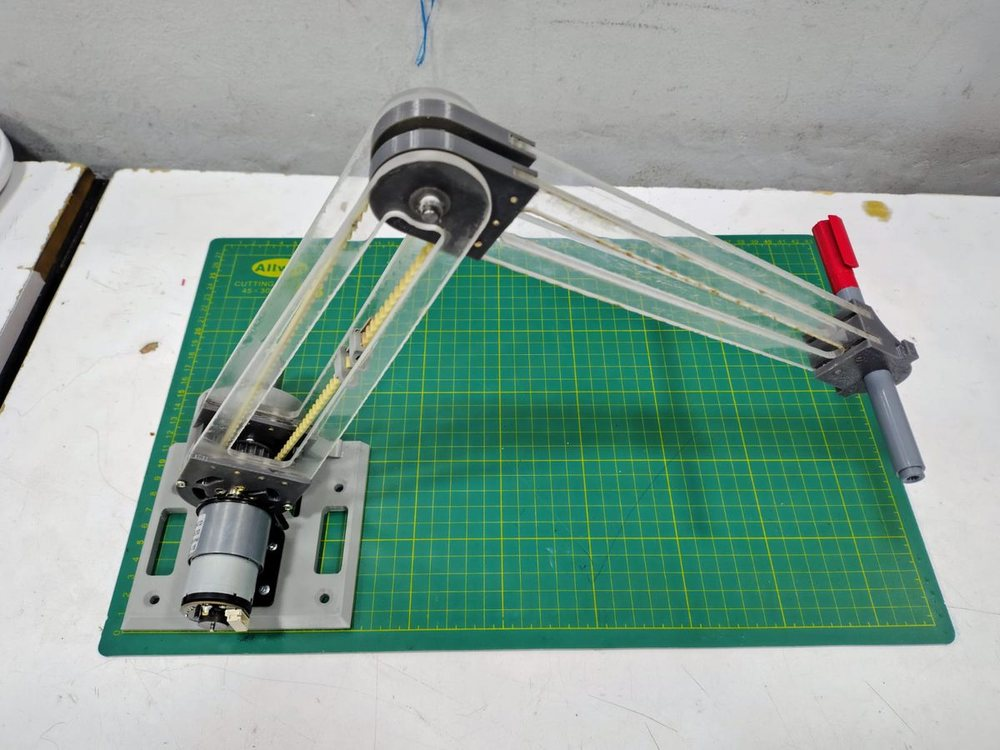
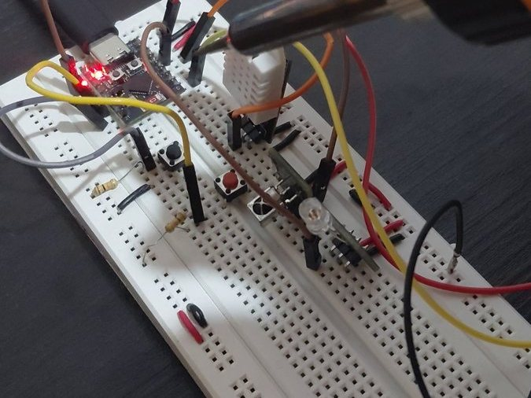
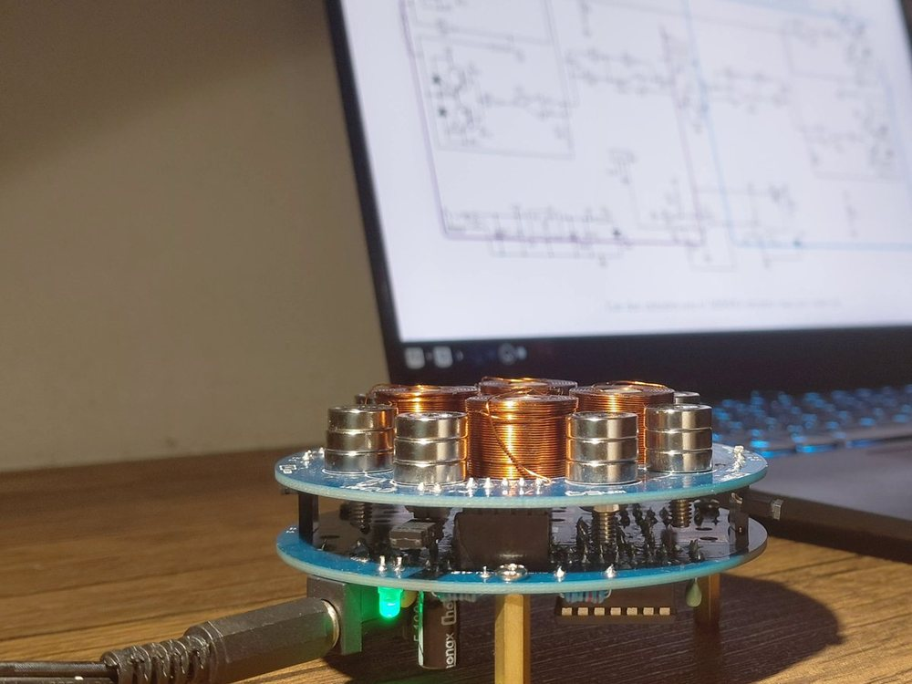
Nicolás Plata Molano
Élève ingénieur en Automatique & Systèmes Cyber-physiques
Nantes, France
nicao511ng@gmail.com
Ouvert aux opportunités de stage de 2ᵉ année (4 à 5 mois à partir d'avril 2027, ou 2 à 3 mois dès juin) en automatique, robotique, systèmes embarqués et automatisation industrielle.